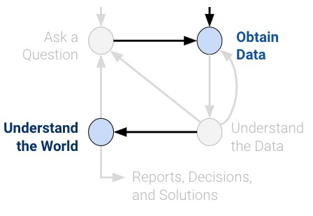
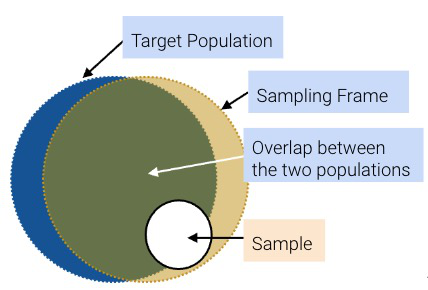
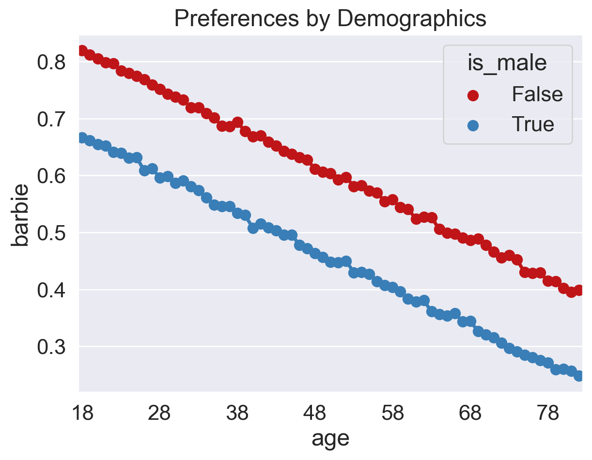
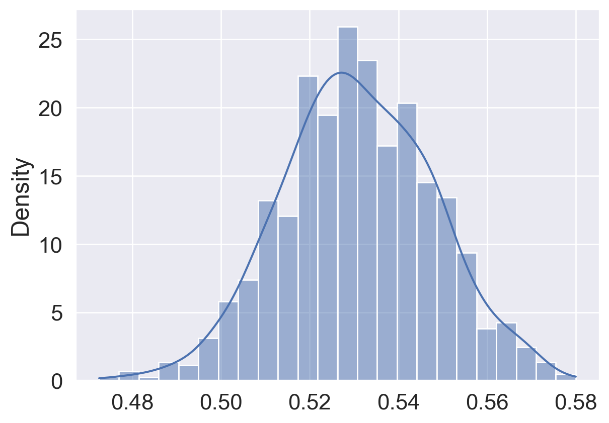

Code
import matplotlib.pyplot as plt
import numpy as np
import pandas as pd
import seaborn as sns
sns.set_theme(style='darkgrid', font_scale = 1.5,
rc={'figure.figsize':(7,5)})
rng = np.random.default_rng()In data science, understanding characteristics of a population starts with having quality data to investigate. While it is often impossible to collect all the data describing a population, we can overcome this by properly sampling from the population. In this note, we will discuss appropriate techniques for sampling from populations.

In general: a census is “an official count or survey of a population, typically recording various details of individuals.” An example is the U.S. Decennial Census which was held in April 2020. It counts every person living in all 50 states, DC, and US territories, not just citizens. Participation is required by law (it is mandated by the U.S. Constitution). Important uses include the allocation of Federal funds, congressional representation, and drawing congressional and state legislative districts. The census is composed of a survey mailed to different housing addresses in the United States.
A survey is a set of questions. An example is workers sampling individuals and households. What is asked and how it is asked can affect how the respondent answers or even whether or not they answer in the first place.
While censuses are great, it is often very difficult and expensive to survey everyone in a population. Imagine the amount of resources, money, time, and energy the U.S. spent on the 2020 Census. While this does give us more accurate information about the population, it’s often infeasible to execute. Thus, we usually survey a subset of the population instead.
A sample is (usually) a subset of the population that is often used to make inferences about the population. If our sample is a good representation of our population, then we can use it to glean useful information at a lower cost. That being said, how the sample is drawn will affect the reliability of such inferences. Two common sources of error in sampling are chance error, where random samples can vary from what is expected in any direction, and bias, which is a systematic error in one direction. Biases can be the result of many things, for example, our sampling scheme or survey methods.
Let’s define some useful vocabulary:
While ideally, these three sets would be exactly the same, they usually aren’t in practice. For example, there may be individuals in your sampling frame (and hence, your sample) that are not in your population. And generally, sample sizes are much smaller than population sizes.

The following case study is adapted from Statistics by Freedman, Pisani, and Purves, W.W. Norton NY, 1978.
In 1936, President Franklin D. Roosevelt (Democratic) went up for re-election against Alf Landon (Republican). As is usual, polls were conducted in the months leading up to the election to try and predict the outcome. The Literary Digest was a magazine that had successfully predicted the outcome of 5 general elections coming into 1936. In their polling for the 1936 election, they sent out their survey to 10 million individuals whom they found from phone books, lists of magazine subscribers, and lists of country club members. Of the roughly 2.4 million people who filled out the survey, only 43% reported they would vote for Roosevelt; thus, the Digest predicted that Landon would win.
On election day, Roosevelt won in a landslide, winning 61% of the popular vote of about 45 million voters. How could the Digest have been so wrong with their polling?
It turns out that the Literary Digest sample was not representative of the population. Their sampling frame of people found in phone books, lists of magazine subscribers, and lists of country club members were more affluent and tended to vote Republican. As such, their sampling frame was inherently skewed in Landon’s favor. The Literary Digest completely overlooked the lion’s share of voters who were still suffering through the Great Depression. Furthermore, they had a dismal response rate (about 24%); who knows how the other non-respondents would have polled? The Digest folded just 18 months after this disaster.
At the same time, George Gallup, a rising statistician, also made predictions about the 1936 elections. Despite having a smaller sample size of “only” 50,000 (this is still more than necessary; more when we cover the Central Limit Theorem), his estimate that 56% of voters would choose Roosevelt was much closer to the actual result (61%). Gallup also predicted the Digest’s prediction within 1% with a sample size of only 3000 people by anticipating the Digest’s affluent sampling frame and subsampling those individuals.
So what’s the moral of the story? Samples, while convenient, are subject to chance error and bias. Election polling, in particular, can involve many sources of bias. To name a few:
Today, the Gallup Poll is one of the leading polls for election results. The many sources of biases – who responds to polls? Do voters tell the truth? How can we predict turnout? – still remain, but the Gallup Poll uses several tactics to mitigate them. Within their sampling frame of “civilian, non-institutionalized population” of adults in telephone households in continental U.S., they use random digit dialing to include both listed/unlisted phone numbers and to avoid selection bias. Additionally, they use a within-household selection process to randomly select households with one or more adults. If no one answers, re-call multiple times to avoid non-response bias.
When sampling, it is essential to focus on the quality of the sample rather than the quantity of the sample. A huge sample size does not fix a bad sampling method. Our main goal is to gather a sample that is representative of the population it came from. In this section, we’ll explore the different types of sampling and their pros and cons.
A convenience sample is whatever you can get ahold of; this type of sampling is non-random. Note that haphazard sampling is not necessarily random sampling; there are many potential sources of bias.
In a probability sample, we provide the chance that any specified set of individuals will be in the sample (individuals in the population can have different chances of being selected; they don’t all have to be uniform), and we sample at random based off this known chance. For this reason, probability samples are also called random samples. The randomness provides a few benefits:
The real world is usually more complicated, and we often don’t know the initial probabilities. For example, we do not generally know the probability that a given bacterium is in a microbiome sample or whether people will answer when Gallup calls landlines. That being said, still we try to model probability sampling to the best of our ability even when the sampling or measurement process is not fully under our control.
A few common random sampling schemes:
Suppose we have 3 TA’s (Alan, Bennett, Celine): I decide to sample 2 of them as follows:
We can list all the possible outcomes and their respective probabilities in a table:
| Outcome | Probability |
|---|---|
| {A, B} | 0.5 |
| {A, C} | 0.5 |
| {B, C} | 0 |
This is a probability sample (though not a great one). Of the 3 people in my population, I know the chance of getting each subset. Suppose I’m measuring the average distance TAs live from campus.
Consider the following sampling scheme:
Yes. For a sample [n, n + 10, n + 20, …, n + 1090], where 1 <= n <= 10, the probability of that sample is 1/10. Otherwise, the probability is 0.
Only 10 possible samples!We are trying to collect a sample from Berkeley residents to predict the which one of Barbie and Oppenheimer would perform better on their opening day, July 21st.
First, let’s grab a dataset that has every single resident in Berkeley (this is a fake dataset) and which movie they actually watched on July 21st.
Let’s load in the movie.csv table. We can assume that:
is_male is a boolean that indicates if a resident identifies as male.import matplotlib.pyplot as plt
import numpy as np
import pandas as pd
import seaborn as sns
sns.set_theme(style='darkgrid', font_scale = 1.5,
rc={'figure.figsize':(7,5)})
rng = np.random.default_rng()movie = pd.read_csv("data/movie.csv")
# create a 1/0 int that indicates Barbie vote
movie['barbie'] = (movie['movie'] == 'Barbie').astype(int)
movie.head()| age | is_male | movie | barbie | |
|---|---|---|---|---|
| 0 | 35 | False | Barbie | 1 |
| 1 | 42 | True | Oppenheimer | 0 |
| 2 | 55 | False | Barbie | 1 |
| 3 | 77 | True | Oppenheimer | 0 |
| 4 | 31 | False | Barbie | 1 |
What fraction of Berkeley residents chose Barbie?
actual_barbie = np.mean(movie["barbie"])
actual_barbie0.5302792307692308This is the actual outcome of the competition. Based on this result, Barbie would win. How did our sample of retirees do?
Let’s take a convenience sample of people who have retired (>= 65 years old). What proportion of them went to see Barbie instead of Oppenheimer?
convenience_sample = movie[movie['age'] >= 65] # take a convenience sample of retirees
np.mean(convenience_sample["barbie"]) # what proportion of them saw Barbie? 0.3744755089093924Based on this result, we would have predicted that Oppenheimer would win! What happened? Is it possible that our sample is too small or noisy?
# what's the size of our sample?
len(convenience_sample)359396# what proportion of our data is in the convenience sample?
len(convenience_sample)/len(movie)0.27645846153846154Seems like our sample is rather large (roughly 360,000 people), so the error is likely not due to solely to chance.
Let us aggregate all choices by age and visualize the fraction of Barbie views, split by gender.
votes_by_barbie = movie.groupby(["age","is_male"]).agg("mean", numeric_only=True).reset_index()
votes_by_barbie.head()| age | is_male | barbie | |
|---|---|---|---|
| 0 | 18 | False | 0.819594 |
| 1 | 18 | True | 0.667001 |
| 2 | 19 | False | 0.812214 |
| 3 | 19 | True | 0.661252 |
| 4 | 20 | False | 0.805281 |
# A common matplotlib/seaborn pattern: create the figure and axes object, pass ax
# to seaborn for drawing into, and later fine-tune the figure via ax.
fig, ax = plt.subplots();
red_blue = ["#bf1518", "#397eb7"]
with sns.color_palette(red_blue):
sns.pointplot(data=votes_by_barbie, x = "age", y = "barbie", hue = "is_male", ax=ax)
new_ticks = [i.get_text() for i in ax.get_xticklabels()]
ax.set_xticks(range(0, len(new_ticks), 10), new_ticks[::10])
ax.set_title("Preferences by Demographics");
Suppose we took a simple random sample (SRS) of the same size as our retiree sample:
n = len(convenience_sample)
random_sample = movie.sample(n, replace = False) ## By default, replace = False
np.mean(random_sample["barbie"])0.5304483077162795This is very close to the actual vote of 0.5302792307692308!
It turns out that we can get similar results with a much smaller sample size, say, 800:
n = 800
random_sample = movie.sample(n, replace = False)
# Compute the sample average and the resulting relative error
sample_barbie = np.mean(random_sample["barbie"])
err = abs(sample_barbie-actual_barbie)/actual_barbie
# We can print output with Markdown formatting too...
from IPython.display import Markdown
Markdown(f"**Actual** = {actual_barbie:.4f}, **Sample** = {sample_barbie:.4f}, "
f"**Err** = {100*err:.2f}%.")Actual = 0.5303, Sample = 0.5275, Err = 0.52%.
We’ll learn how to choose this number when we (re)learn the Central Limit Theorem later in the semester.
In our SRS of size 800, what would be our chance error?
Let’s simulate 1000 versions of taking the 800-sized SRS from before:
nrep = 1000 # number of simulations
n = 800 # size of our sample
poll_result = []
for i in range(0, nrep):
random_sample = movie.sample(n, replace = False)
poll_result.append(np.mean(random_sample["barbie"]))fig, ax = plt.subplots()
sns.histplot(poll_result, stat='density', ax=ax)
ax.axvline(actual_barbie, color="orange", lw=4);
What fraction of these simulated samples would have predicted Barbie?
poll_result = pd.Series(poll_result)
np.sum(poll_result > 0.5)/10000.95You can see the curve looks roughly Gaussian/normal. Using KDE:
sns.histplot(poll_result, stat='density', kde=True);
Understanding the sampling process is what lets us go from describing the data to understanding the world. Without knowing / assuming something about how the data were collected, there is no connection between the sample and the population. Ultimately, the dataset doesn’t tell us about the world behind the data.